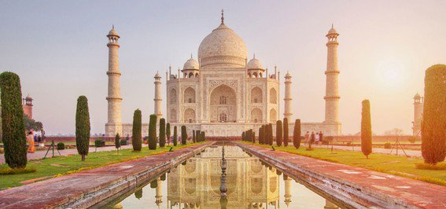

Chichen Itza
-Mexico-
Coliseo Romano
-Italia-

Cristo Redentor
-Brazil-
Petra
-Jordania-

Taj Mahal
-India-
Muralla China
-Huairou, China-

Machu Picchu
-Peru--
-Mexico-
-Italia-
-Brazil-
-Jordania-
-India-
-Huairou, China-
-Peru--
Un espectacular recorrido a travez delas 7 maravillas.

Chichén Itzá es un complejo de ruinas mayas famoso a nivel mundial en la península de Yucatán de México. Una enorme pirámide escalonada, conocida como El Castillo, domina los 6.5 km cuadrados de la ciudad antigua, que prosperó desde aproximadamente el año 600 d.C. hasta el siglo XIII. Los tallados gráficos en piedra sobreviven en estructuras como el campo de pelota, el Templo de los Guerreros y el Muro de las Calaveras. En las noches, espectáculos de luces y sonidos iluminan la sofisticada geometría de las construcciones.

El Coliseo o Anfiteatro Flavio es un anfiteatro de la época del Imperio romano, construido en el siglo I y ubicado en el centro de la ciudad de Roma. Su denominación original, Anfiteatro Flavio, hace referencia a la dinastía Flavia de emperadores que lo construyó; su nombre posterior, Coliseo, y por el que es más conocido en la actualidad, se debe a una gran estatua que había cerca, el Coloso de Nerón, que no ha llegado hasta nosotros. Por su conservación e historia, el Coliseo es uno de los monumentos más famosos de la Antigüedad clásica. Fue declarado Patrimonio de la Humanidad en 1980 por la Unesco y una de Las Nuevas Siete Maravillas del Mundo Moderno el 7 de julio de 2007.

El Cristo Redentor o Cristo del Corcovado, es una enorme estatua de Jesús de Nazaret con los brazos abiertos mostrando a la ciudad de Río de Janeiro, Brasil.La estatua tiene una altura de 30,1 metros más un pedestal de 8 metros. Este monumento fue inaugurado el 12 de octubre de 1931, después de aproximadamente cinco años de obra. El Cristo del Corcovado es uno de los atractivos turísticos más importantes de Brasil y, para los creyentes, un lugar de peregrinación.

La Gran Muralla es una antigua fortificación china construida y reconstruida entre el siglo V a. C. y el siglo XVI para proteger la frontera norte del Imperio chino durante las sucesivas dinastías imperiales de los ataques de los nómadas xiongnu de Mongolia y Manchuria.
Machu Picchu es una ciudadela inca ubicada en las alturas de las montañas de los Andes en Perú, sobre el valle del río Urubamba. Se construyó en el siglo XV y luego fue abandonada, y es famosa por sus sofisticadas paredes de piedra seca que combinan enormes bloques sin el uso de un mortero, los edificios fascinantes que se relacionan con las alineaciones astronómicas y sus vistas panorámicas. El uso exacto que tuvo sigue siendo un misterio.
Petra es una ciudad arqueológica famosa en el desierto, al sudoeste de Jordania. Fundada alrededor del 300 a. C., era la capital del Reino Nabateo. Se puede acceder a través de un estrecho cañón llamado Al Siq y contiene tumbas y templos tallados en acantilados de arenisca de color rosa, motivo por el que se la conoce como la "Ciudad Rosa". Su estructura más famosa probablemente sea el Al Khazneh de 45 metros de altura, un templo con una fachada y decoración al estilo griego, que se conoce como El Tesoro.

El Taj Mahal es considerado el más bello ejemplo de palacio, estilo que combina elementos de las arquitecturas islámica, persa, india e incluso turca. Este monumento ha logrado especial notoriedad por el carácter romántico de su inspiración. Aunque el mausoleo cubierto por la cúpula de mármol blanco es la parte más conocida, el Taj Mahal es un conjunto amurallado de edificios que ocupa 17 hectáreas y que también incluye una gran mezquita, una casa de invitados y jardines. El monumento es un importante destino turístico de la India. En 1983, fue reconocido por la Unesco como Patrimonio de la Humanidad por ser «la joya del arte musulmán en India y una de las obras maestras del patrimonio mundial admiradas universalmente».

Asignacion de posiciones,coordinar y analizar las funciones turistivcas

Optimizar los resultados de investigacion y votacon.

Gestionar, planificar y controlar las expediciones

Planear, coordinar y supervisar las actividades profesionales.